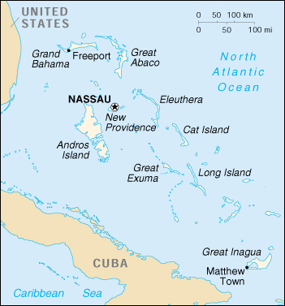

|
Bahamas, The | |
| Introduction Geography People Government Economy Communications Transportation Military Transnational Issues | ||
|  | ||
| Bahamas, The | Introduction | Top of Page |
| Background: | Since attaining independence from the UK in 1973, The Bahamas have prospered through tourism and international banking and investment management. Because of its geography, the country is a major transshipment point for illegal drugs, particularly shipments to the US, and its territory is used for smuggling illegal migrants into the US. |
| Bahamas, The | Geography | Top of Page |
| Location: | Caribbean, chain of islands in the North Atlantic Ocean, southeast of Florida |
| Geographic coordinates: | 24 15 N, 76 00 W |
| Map references: | Central America and the Caribbean |
| Area: |
total:
13,940 sq km
land: 10,070 sq km water: 3,870 sq km |
| Area - comparative: | slightly smaller than Connecticut |
| Land boundaries: | 0 km |
| Coastline: | 3,542 km |
| Maritime claims: |
continental shelf:
200-m depth or to the depth of exploitation
exclusive economic zone: 200 NM territorial sea: 12 NM |
| Climate: | tropical marine; moderated by warm waters of Gulf Stream |
| Terrain: | long, flat coral formations with some low rounded hills |
| Elevation extremes: |
lowest point:
Atlantic Ocean 0 m
highest point: Mount Alvernia, on Cat Island 63 m |
| Natural resources: | salt, aragonite, timber, arable land |
| Land use: |
arable land:
1%
permanent crops: 0% permanent pastures: 0% forests and woodland: 32% other: 67% (1993 est.) |
| Irrigated land: | NA sq km |
| Natural hazards: | hurricanes and other tropical storms that cause extensive flood and wind damage |
| Environment - current issues: | coral reef decay; solid waste disposal |
| Environment - international agreements: |
party to:
Biodiversity, Climate Change, Climate Change-Kyoto Protocol, Desertification, Endangered Species, Hazardous Wastes, Law of the Sea, Nuclear Test Ban, Ozone Layer Protection, Ship Pollution, Wetlands
signed, but not ratified: none of the selected agreements |
| Geography - note: | strategic location adjacent to US and Cuba; extensive island chain |
| Bahamas, The | People | Top of Page |
| Population: |
297,852
note: estimates for this country explicitly take into account the effects of excess mortality due to AIDS; this can result in lower life expectancy, higher infant mortality and death rates, lower population and growth rates, and changes in the distribution of population by age and sex than would otherwise be expected (July 2001 est.) |
| Age structure: |
0-14 years:
29.43% (male 44,179; female 43,486)
15-64 years: 64.46% (male 94,329; female 97,674) 65 years and over: 6.11% (male 7,618; female 10,566) (2001 est.) |
| Population growth rate: | 0.93% (2001 est.) |
| Birth rate: | 19.1 births/1,000 population (2001 est.) |
| Death rate: | 7.14 deaths/1,000 population (2001 est.) |
| Net migration rate: | -2.65 migrant(s)/1,000 population (2001 est.) |
| Sex ratio: |
at birth:
1.02 male(s)/female
under 15 years: 1.02 male(s)/female 15-64 years: 0.97 male(s)/female 65 years and over: 0.72 male(s)/female total population: 0.96 male(s)/female (2001 est.) |
| Infant mortality rate: | 17.03 deaths/1,000 live births (2001 est.) |
| Life expectancy at birth: |
total population:
70.46 years
male: 67.27 years female: 73.71 years (2001 est.) |
| Total fertility rate: | 2.3 children born/woman (2001 est.) |
| HIV/AIDS - adult prevalence rate: | 4.13% (1999 est.) |
| HIV/AIDS - people living with HIV/AIDS: | 6,900 (1999 est.) |
| HIV/AIDS - deaths: | 500 (1999 est.) |
| Nationality: |
noun:
Bahamian(s)
adjective: Bahamian |
| Ethnic groups: | black 85%, white 12%, Asian and Hispanic 3% |
| Religions: | Baptist 32%, Anglican 20%, Roman Catholic 19%, Methodist 6%, Church of God 6%, other Protestant 12%, none or unknown 3%, other 2% |
| Languages: | English, Creole (among Haitian immigrants) |
| Literacy: |
definition:
age 15 and over can read and write
total population: 98.2% male: 98.5% female: 98% (1995 est.) |
| Bahamas, The | Government | Top of Page |
| Country name: |
conventional long form:
Commonwealth of The Bahamas
conventional short form: The Bahamas |
| Government type: | constitutional parliamentary democracy |
| Capital: | Nassau |
| Administrative divisions: | 21 districts; Acklins and Crooked Islands, Bimini, Cat Island, Exuma, Freeport, Fresh Creek, Governor's Harbour, Green Turtle Cay, Harbour Island, High Rock, Inagua, Kemps Bay, Long Island, Marsh Harbour, Mayaguana, New Providence, Nicholls Town and Berry Islands, Ragged Island, Rock Sound, Sandy Point, San Salvador and Rum Cay |
| Independence: | 10 July 1973 (from UK) |
| National holiday: | Independence Day, 10 July (1973) |
| Constitution: | 10 July 1973 |
| Legal system: | based on English common law |
| Suffrage: | 18 years of age; universal |
| Executive branch: |
chief of state:
Queen ELIZABETH II (since 6 February 1952), represented by Governor General Sir Orville TURNQUEST (since 2 January 1995)
head of government: Prime Minister Hubert Alexander INGRAHAM (since 19 August 1992) and Deputy Prime Minister Frank WATSON (since December 1994) cabinet: Cabinet appointed by the governor general on the prime minister's recommendation elections: none; the monarch is hereditary; governor general appointed by the monarch; prime minister and deputy prime minister appointed by the governor general |
| Legislative branch: |
bicameral Parliament consists of the Senate (16-member body appointed by the governor general upon the advice of the prime minister and the opposition leader for five-year terms) and the House of Assembly (40 seats; members elected by direct popular vote to serve five-year terms)
elections: last held 14 March 1997 (next to be held by March 2002) election results: percent of vote by party - NA%; seats by party - FNM 35, PLP 5 |
| Judicial branch: | Supreme Court; Court of Appeal; magistrates courts |
| Political parties and leaders: | Free National Movement or FNM [Hubert Alexander INGRAHAM]; Progressive Liberal Party or PLP [Perry CHRISTIE] |
| Political pressure groups and leaders: | NA |
| International organization participation: | ACP, C, Caricom, CCC, CDB, ECLAC, FAO, G-77, IADB, IBRD, ICAO, ICFTU, ICRM, IFC, IFRCS, ILO, IMF, IMO, Inmarsat, Intelsat, Interpol, IOC, ITU, LAES, NAM, OAS, OPANAL, OPCW, UN, UNCTAD, UNESCO, UNIDO, UPU, WHO, WIPO, WMO, WTrO (observer) |
| Diplomatic representation in the US: |
chief of mission:
Ambassador Joshua SEARS
chancery: 2220 Massachusetts Avenue NW, Washington, DC 20008 telephone: [1] (202) 319-2660 FAX: [1] (202) 319-2668 consulate(s) general: Miami and New York |
| Diplomatic representation from the US: |
chief of mission:
Ambassador-designate J. Richard BLANKENSHIP
embassy: Queen Street, Nassau mailing address: local or express mail address: P. O. Box N-8197, Nassau; stateside address: American Embassy Nassau, P. O. Box 599009, Miami, FL 33159-9009; pouch address: Nassau, Department of State, Washington, DC 20521-3370 telephone: [1] (242) 322-1181, 328-2206 FAX: [1] (242) 356-0222 |
| Flag description: | three equal horizontal bands of aquamarine (top), gold, and aquamarine, with a black equilateral triangle based on the hoist side |
| Bahamas, The | Economy | Top of Page |
| Economy - overview: | The Bahamas is a stable, developing nation with an economy heavily dependent on tourism and offshore banking. Tourism alone accounts for more than 60% of GDP and directly or indirectly employs 40% of the archipelago's labor force. Moderate growth in tourism receipts and a boom in construction of new hotels, resorts, and residences led to an increase of the country's GDP by an estimated 3% in 1998, 6% in 1999, and 4.5% in 2000. Manufacturing and agriculture together contribute only 10% of GDP and show little growth, despite government incentives aimed at those sectors. Overall growth prospects in the short run will depend heavily on the fortunes of the tourism sector and continued sturdy growth in the US, which accounts for the majority of tourist visitors. |
| GDP: | purchasing power parity - $4.5 billion (2000 est.) |
| GDP - real growth rate: | 4.5% (2000 est.) |
| GDP - per capita: | purchasing power parity - $15,000 (2000 est.) |
| GDP - composition by sector: |
agriculture:
3%
industry: 7% services: 90% (1999 est.) |
| Population below poverty line: | NA% |
| Household income or consumption by percentage share: |
lowest 10%:
NA%
highest 10%: NA% |
| Inflation rate (consumer prices): | 1.9% (2000 est.) |
| Labor force: | 156,000 (1999) |
| Labor force - by occupation: | tourism 40%, other services 50%, industry 5%, agriculture 5% (1995 est.) |
| Unemployment rate: | 9% (1998 est.) |
| Budget: |
revenues:
$766 million
expenditures: $845 million, including capital expenditures of $97 million (FY97/98) |
| Industries: | tourism, banking, cement, oil refining and transshipment, salt, rum, aragonite, pharmaceuticals, spiral-welded steel pipe |
| Industrial production growth rate: | NA% |
| Electricity - production: | 1.465 billion kWh (1999) |
| Electricity - production by source: |
fossil fuel:
100%
hydro: 0% nuclear: 0% other: 0% (1999) |
| Electricity - consumption: | 1.362 billion kWh (1999) |
| Electricity - exports: | 0 kWh (1999) |
| Electricity - imports: | 0 kWh (1999) |
| Agriculture - products: | citrus, vegetables; poultry |
| Exports: | $376.8 million (2000 est.) |
| Exports - commodities: | pharmaceuticals, cement, rum, crawfish, refined petroleum products |
| Exports - partners: | US 22.3%, Switzerland 15.6%, UK 15%, Denmark 7.4% (1998) |
| Imports: | $1.73 billion (2000 est.) |
| Imports - commodities: | foodstuffs, manufactured goods, crude oil, vehicles, electronics |
| Imports - partners: | US 27.3%, Italy 26.5%, Japan 10%, Denmark 4.2% (1998) |
| Debt - external: | $385.8 million (2000 est.) |
| Economic aid - recipient: | $9.8 million (1995) |
| Currency: | Bahamian dollar (BSD) |
| Currency code: | BSD |
| Exchange rates: | Bahamian dollars per US dollar - 1.000 (fixed rate pegged to the dollar) |
| Fiscal year: | 1 July - 30 June |
| Bahamas, The | Communications | Top of Page |
| Telephones - main lines in use: | 96,000 (1997) |
| Telephones - mobile cellular: | 6,152 (1997) |
| Telephone system: |
general assessment:
modern facilities
domestic: totally automatic system; highly developed international: tropospheric scatter and submarine cable to Florida; 3 coaxial submarine cables; satellite earth station - 1 Intelsat (Atlantic Ocean) (1997) |
| Radio broadcast stations: | AM 3, FM 4, shortwave 0 (1998) |
| Radios: | 215,000 (1997) |
| Television broadcast stations: | 1 (1997) |
| Televisions: | 67,000 (1997) |
| Internet country code: | .bs |
| Internet Service Providers (ISPs): | 19 (2000) |
| Internet users: | 15,000 (2000) |
| Bahamas, The | Transportation | Top of Page |
| Railways: | 0 km |
| Highways: |
total:
2,693 km
paved: 1,546 km unpaved: 1,147 km (1997) |
| Waterways: | none |
| Ports and harbors: | Freeport, Matthew Town, Nassau |
| Merchant marine: |
total:
1,049 ships (1,000 GRT or over) totaling 30,000,221 GRT/44,601,471 DWT
ships by type: bulk 185, cargo 214, chemical tanker 36, combination bulk 15, combination ore/oil 22, container 66, liquefied gas 33, livestock carrier 1, multi-functional large-load carrier 4, passenger 79, passenger/cargo 1, petroleum tanker 182, railcar carrier 1, refrigerated cargo 118, roll on/roll off 50, short-sea passenger 15, specialized tanker 3, vehicle carrier 24 note: includes some foreign-owned ships registered here as a flag of convenience: Algeria 2, Australia 1, Austria 1, Bermuda 6, Belgium 14, Canada 1, Cuba 1, Cyprus 2, Denmark 17, Finland 7, France 9, Germany 9, Greece 89, Hong Kong 7, Indonesia 2, India 1, Israel 4, Italy 8, Japan 23, Jamaica 1, Kenya 1, Lebanon 2, Luxembourg 2, Monaco 15, Malaysia 1, Netherlands 16, Norway 139, Poland 3, Portugal 2, Russia 2, Saudi Arabia 5, Singapore 12, Spain 7, Sweden 14, Syria 1, Switzerland 7, UAE 1, Trinidad and Tobago 2, UK 67, Ukraine 3, US 50, British Virgin Islands 1, British Virgin Islands 1 (2000 est.) |
| Airports: | 65 (2000 est.) |
| Airports - with paved runways: |
total:
36
over 3,047 m: 2 2,438 to 3,047 m: 2 1,524 to 2,437 m: 16 914 to 1,523 m: 13 under 914 m: 3 (2000 est.) |
| Airports - with unpaved runways: |
total:
29
914 to 1,523 m: 6 under 914 m: 23 (2000 est.) |
| Heliports: | 1 (2000 est.) |
| Bahamas, The | Military | Top of Page |
| Military branches: | Royal Bahamas Defense Force (Coast Guard only), Royal Bahamas Police Force |
| Military expenditures - dollar figure: | $20 million (FY95/96) |
| Military expenditures - percent of GDP: | NA% |
| Bahamas, The | Transnational Issues | Top of Page |
| Disputes - international: | none |
| Illicit drugs: | transshipment point for cocaine and marijuana bound for US and Europe; banking industry vulnerable to money laundering |
{kind=link}
{kind=link}